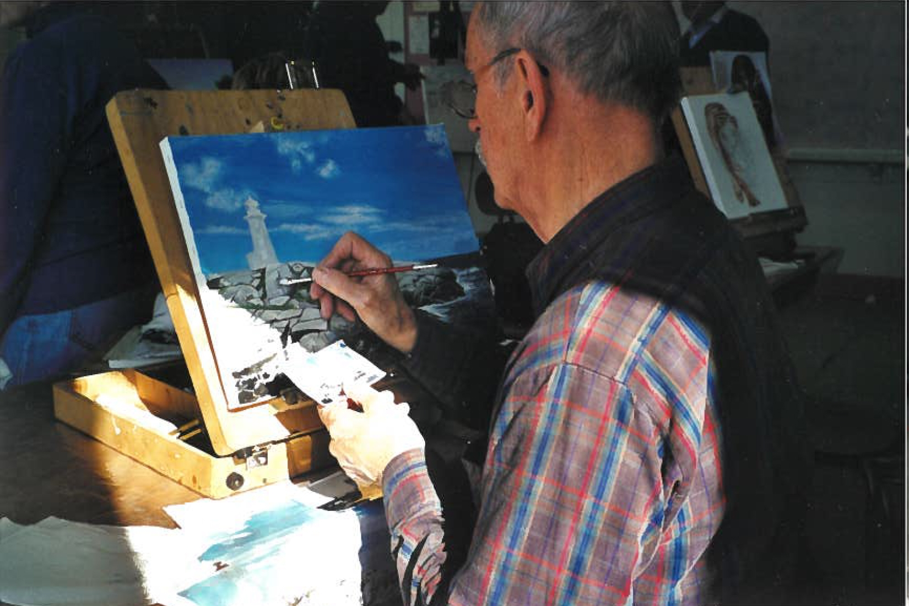
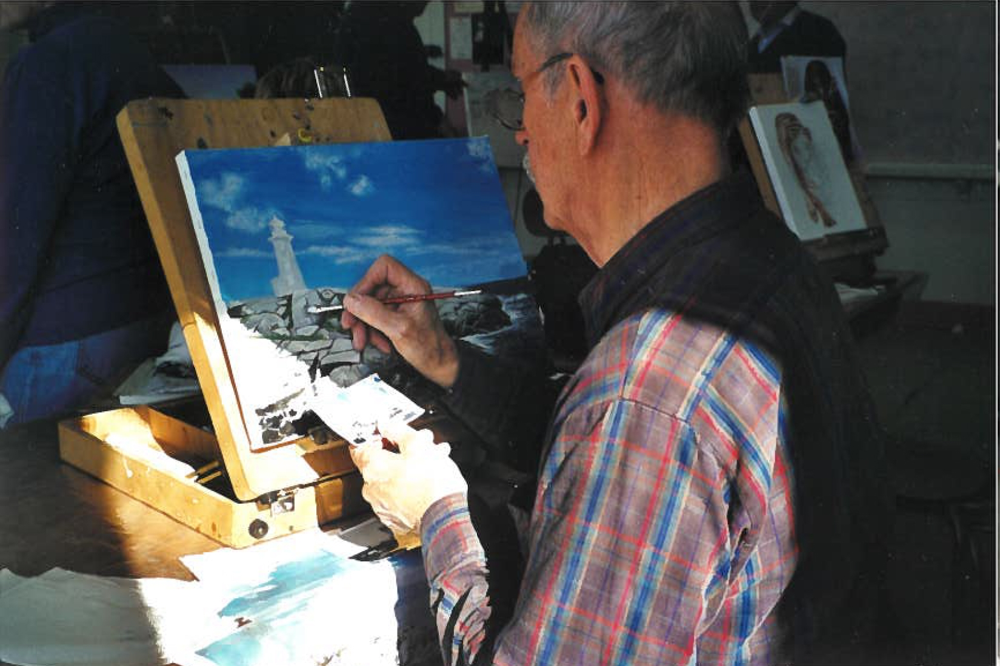

Contexte familial
Préférant mener une vie un peu plus facile sur le plan économique pour pourvoir aux besoins de leur famille, les parents d’Hubert Léger, Béatrice Cuerrier et Henri Léger, décident de quitter Saint-Polycarpe, dans le comté de Soulanges, et la vie de la ferme pour emménager à Montréal, vers 1925.
C’est donc à Montréal, plus précisément à Verdun, en 1926, dans une famille composée de trois sœurs aînées, qu’est né Hubert. Son père travaille alors comme chauffeur de tramway et Béatrice reste à la maison pour s’occuper des quatre enfants. Un peu plus tard, toute la famille déménage à Montréal. Son enfance se déroule dans les rues et ruelles près de la rue Messier, alors qu’il est entouré de ses trois grandes sœurs : Fernande, Gertrude et Rita. Né le dernier, il est très gâté par sa mère et ses sœurs, car dans ces années-là, un garçon était considéré comme un miracle après la naissance de trois filles.

 

Études et vie professionnelle
Sa mère avait la mentalité que les hommes devaient avoir plus de scolarité que les femmes. C’était commun dans les années 1950. C’est pour cette raison qu’Hubert fait des études à la Polytechnique et termine sa 12e année. Par la suite, pour aider sa mère, il travaille pour gagner sa vie et payer une pension, car ses parents vivaient séparés, mais son père pourvoyait quand même aux besoins de sa famille.
Sa première expérience professionnelle est pour les magasins DeSerres, où il développe ses connaissances pour les armes de chasse, les équipements pour la pêche et bien d’autres sports, puisqu’il devient également un conseiller aux ventes pour ce magasin. À cette époque, son patron est le fils du fondateur d’Omer DeSerres, Roger, qu’il croisait de temps en temps. Par la suite, il est voyageur de commerce jusqu’en 1966. Il abandonne ce métier peu pratique pour prendre soin de sa nouveau-née, la petite Suzanne. Il travaille ensuite dans la vente de motoneiges Ski-Doo, puis occupe le poste de magasinier chez Pilon fournitures de bureau jusqu’à la retraite.
Les loisirs et le chalet de Chertsey
C’est par l’intermédiaire de sa sœur Gertrude qu’Hubert rencontre Émérence, en 1963. Faut dire qu’Hubert avait déjà une amie de cœur nommée Lise, mais que les sœurs d’Hubert n’aimaient pas particulièrement, car elles trouvaient que celui-ci se sentait un peu coincé par une femme jalouse et possessive qui déplaisait à la famille d’Hubert.
Gertrude, qui est une collègue d’Émérence Chapleau chez Familex, aime bien sa personnalité réservée, polie et agréable. C’est à cause de la belle personnalité d’Émérence que Gertrude pense qu’elle serait un bien meilleur parti pour son frère que Lise. Hubert fréquente donc Émérence de façon plus officielle après l’avoir présentée à sa famille lors d’un souper familial chez sa sœur Rita. À cette époque, il était habituel que les fréquentations durent au moins un an. Aux dires d’Émérence, Hubert était un homme très « entreprenant » et chaleureux et n’en était pas à sa première fréquentation non plus. Mais, durant les deux années de fréquentation d’Émérence et Hubert, tour à tour les mères de nos tourtereaux…
Entouré de la nature encore très sauvage de la région de la Matawinie (Lanaudière), Hubert va à la pêche, à la chasse à l’arme à feu et à la chasse au tir à l’arc. Le chalet qu’il possédait sur la rue des Sapins à Chertsey est le théâtre d’innombrables week-ends plus loufoques que les autres, à cause entre autres des réunions familiales avec ses neveux et nièces qu’ils affectionnaient énormément. D’ailleurs, certains d’entre eux diront qu’Hubert fut un modèle positif, inspirant et empreint de tellement d’imagination qu’ils se rappellent encore les histoires légendaires racontées par Hubert avec des Indiens dans la forêt.
“There is no beauty without some strangeness.”
La fibre artistique
Vers les années 1950, Hubert travaille comme étalagiste pour l’un des magasins dirigés par Roger DeSerres à Montréal, coin Saint-Denis et Sainte-Catherine. C’est dans ces années-là que sa fibre artistique est sollicitée afin de mettre en valeur les articles de sport que les magasins DeSerres proposaient à leur clientèle. Il s’équipe avec un appareil-photo et une caméra.
À sa retraite, à l’âge de 65 ans, il commence à peindre en atelier en même temps qu’Émérence, et c’est un beau loisir à partager en couple. Très souvent, il peint jusqu’après minuit afin de finir un bout de sa toile. Il choisit l’acrylique comme médium, car c’est plus pratique selon lui pour faire des retouches sans trop attendre. Au total, il a peint plus de 35 œuvres au cours de 10 années. Il affectionne particulièrement les thèmes de l’histoire, la nature, les paysages, les animaux, l’architecture, la chasse, la pêche et les bateaux.